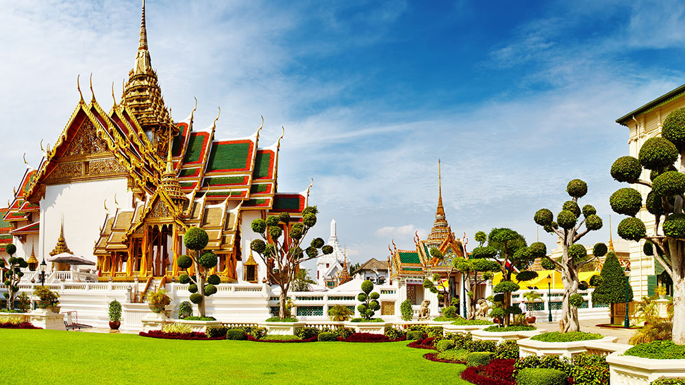
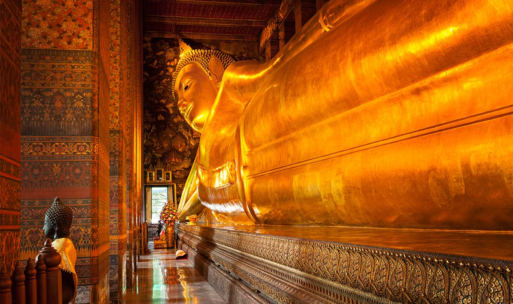
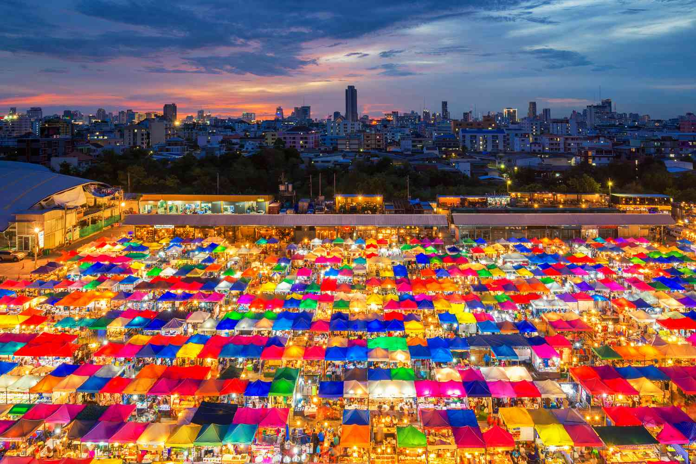
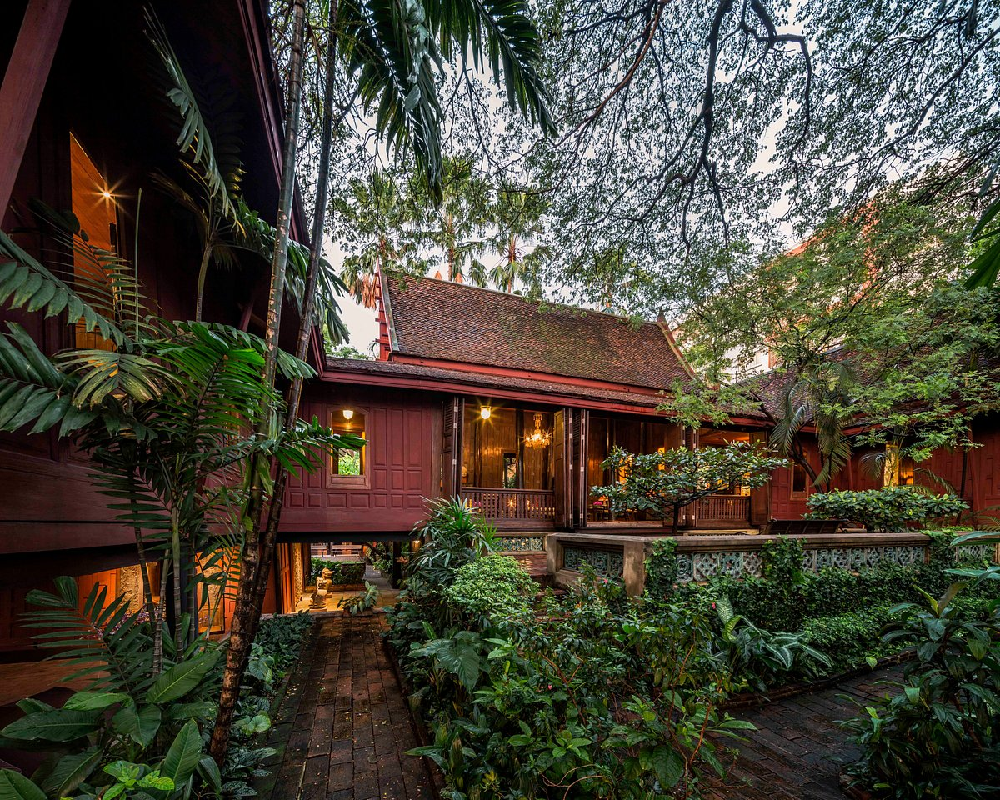
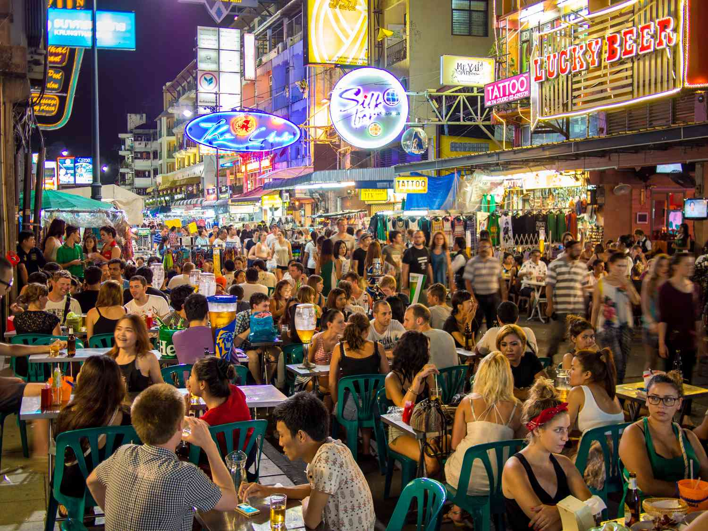
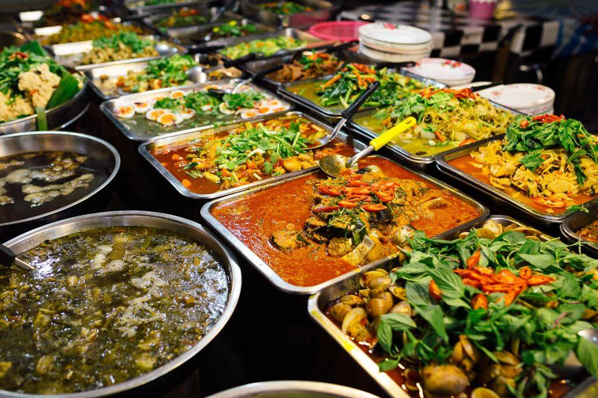

Tales from Bangkok
Stepping off the plane and into the bustling city of Bangkok, I could immediately feel the vibrant energy that permeated every corner. It was my first time visiting this captivating city, and I was eager to immerse myself in its rich culture and explore its many wonders. One of my most memorable experiences in Bangkok was visiting the Grand Palace. As I entered the palace grounds, I was greeted by intricate architectural details, shimmering golden structures, and beautifully manicured gardens. The sight of the Temple of the Emerald Buddha, with its exquisite craftsmanship and mesmerizing aura, left me in awe. I couldn't help but feel a sense of reverence and tranquility in the presence of such magnificence. Another highlight of my trip was wandering through the vibrant streets of Chinatown (Yaowarat). The intoxicating aroma of sizzling stir-fries and the lively chatter of locals filled the air. I delighted in exploring the narrow alleyways, lined with bustling market stalls and enticing street food vendors. I savored the flavors of delectable dim sum, succulent roasted duck, and aromatic bowls of noodle soup. Each bite was a revelation, an explosion of flavors that awakened my taste buds to the wonders of Thai-Chinese cuisine. One evening, I ventured to the Chao Phraya River and hopped onto a traditional long-tail boat. As we glided along the river, passing by glittering temples and luxurious riverside hotels, I marveled at the juxtaposition of old and new, tradition and modernity. The gentle breeze caressed my face, and the rhythmic sounds of the boat's engine provided a soothing backdrop to the enchanting views. But it wasn't just the iconic landmarks and bustling streets that made Bangkok special. It was the warmth and friendliness of the Thai people that left a lasting impression on me. Everywhere I went, I encountered smiling faces and genuine hospitality. From the street food vendors who patiently explained the ingredients of their dishes to the locals who eagerly shared stories about their city, I felt welcomed and embraced by the vibrant spirit of Bangkok. As my time in Bangkok came to an end, I couldn't help but feel a mix of gratitude and a desire to return. The city had opened my eyes to a new world of flavors, sights, and experiences. It had ignited a sense of wanderlust within me, fueling a desire to explore more of this beautiful country and its captivating cities. Bangkok had become more than just a destination—it had become a part of me. Its vibrant streets, rich culture, and warm hospitality had left an indelible mark on my heart. As I bid farewell to this enchanting city, I knew that my journey had only just begun, and I was eager to continue unraveling the mysteries and delights of the world." I hope this personal experience in Bangkok captures the essence of the city and brings your travel blog to life. Enjoy sharing your adventures with your readers!
Facts
- Sukhumvit: This area offers a wide range of accommodation options, from luxury hotels to budget-friendly guesthouses. It's a popular choice due to its central location, proximity to shopping malls, restaurants, and nightlife.
- Silom: Known for its bustling business district and vibrant nightlife, Silom offers a mix of upscale hotels and budget accommodations. It's also close to attractions like Lumpini Park and the Patpong Night Market.
- Riverside: For a more scenic and relaxed stay, consider the riverside area along the Chao Phraya River. Here, you'll find luxury hotels with stunning river views and easy access to major temples and attractions.
- Khao San Road: If you're a budget traveler or looking for a lively backpacker atmosphere, Khao San Road is the place to be. It's known for its affordable guesthouses, street food stalls, and vibrant nightlife.
Restaurants and Street Food:
- Chinatown (Yaowarat): Explore the bustling streets of Chinatown, where you'll find a plethora of authentic Chinese restaurants and street food stalls. Don't miss the opportunity to try the famous seafood and dim sum in this vibrant neighborhood.
- Thonglor and Ekkamai: These trendy neighborhoods are known for their hip cafes, stylish restaurants, and international cuisine. You'll find a wide range of options from Thai fusion to Japanese, Italian, and more.
- Sukhumvit Soi 38: This street is renowned for its vibrant night food market. Indulge in delicious local street food like pad Thai, grilled skewers, and fresh tropical fruits.
- Banglamphu: Located near Khao San Road, Banglamphu offers a mix of local eateries and international restaurants. Try some traditional Thai dishes, such as green curry and papaya salad, or enjoy Western favorites.
- Chatuchak Weekend Market: While exploring the famous Chatuchak Market, don't miss the opportunity to sample the diverse food stalls. You'll find an array of Thai snacks, grilled meats, refreshing drinks, and more.
- Bangkok's Shopping Malls: Bangkok is home to numerous shopping malls that offer a wide variety of dining options. From food courts serving affordable Thai dishes to upscale international restaurants, the malls have something for every palate.
Remember to try the local delicacies, such as Tom Yum soup, Pad Thai, Mango Sticky Rice, and Thai Iced Tea, as they showcase the flavors of Thailand. Whether you prefer upscale dining experiences or sampling the diverse street food scene, Bangkok offers a wide range of options to suit every taste and budget. Enjoy exploring the city's culinary delights!
Attractions
The Grand Palace
The Grand Palace is a breathtaking complex that was the official residence of the Kings of Thailand. Within the palace grounds, you'll find the stunning Wat Phra Kaew (Temple of the Emerald Buddha), which houses the revered Emerald Buddha statue.
Wat Arun

Also known as the Temple of Dawn, Wat Arun is an iconic riverside temple with a central prang (tower) adorned with colorful porcelain tiles. Climbing to the top offers panoramic views of the Chao Phraya River and the city skyline.
Wat Pho
Home to the famous reclining Buddha, Wat Pho is one of the oldest and largest temples in Bangkok. The massive gold-plated statue of the reclining Buddha is a sight to behold, and the temple complex is also known for its traditional Thai massage school.
Chatuchak Market
A shopaholic's paradise, Chatuchak Market is one of the world's largest weekend markets. It boasts thousands of stalls selling everything from clothing and accessories to handicrafts, antiques, and delicious street food.
Chao Phraya River

The Chao Phraya River is a lifeline of Bangkok, and taking a boat ride along the river is a popular way to explore the city. You can admire the city's skyline, visit riverside temples, and witness the bustling activity along the riverbanks.
Jim Thompson House
Once the home of an American silk entrepreneur, the Jim Thompson House is now a museum that showcases traditional Thai architecture and an impressive collection of art and antiques. It offers a glimpse into Thai history and culture.
Khao San Road
Known as the backpacker hub, Khao San Road is a vibrant street lined with bars, restaurants, street vendors, and shops. It's a popular spot for budget travelers, offering a lively atmosphere and a chance to connect with fellow travelers.
Floating Markets

Bangkok is famous for its floating markets, where vendors sell fresh produce, local snacks, and handicrafts from boats along the canals. Damnoen Saduak Floating Market and Amphawa Floating Market are among the most visited ones.
Lumpini Park

Escape the bustling city and unwind in Lumpini Park, a green oasis in the heart of Bangkok. It's a great place for a leisurely stroll, picnics, or even joining a group of locals practicing tai chi or yoga.
Street Food
Bangkok is renowned for its street food scene, offering a wide variety of mouthwatering dishes. From savory Pad Thai and spicy Tom Yum soup to delectable mango sticky rice and crispy fried insects, exploring the street food stalls is a culinary adventure in itself.
Where to Stay and Eat
Accommodation:
- Sukhumvit: This area offers a wide range of accommodation options, from luxury hotels to budget-friendly guesthouses. It's a popular choice due to its central location, proximity to shopping malls, restaurants, and nightlife.
- Silom: Known for its bustling business district and vibrant nightlife, Silom offers a mix of upscale hotels and budget accommodations. It's also close to attractions like Lumpini Park and the Patpong Night Market.
- Riverside: For a more scenic and relaxed stay, consider the riverside area along the Chao Phraya River. Here, you'll find luxury hotels with stunning river views and easy access to major temples and attractions.
- Khao San Road: If you're a budget traveler or looking for a lively backpacker atmosphere, Khao San Road is the place to be. It's known for its affordable guesthouses, street food stalls, and vibrant nightlife.
Restaurants and Street Food:
- Chinatown (Yaowarat): Explore the bustling streets of Chinatown, where you'll find a plethora of authentic Chinese restaurants and street food stalls. Don't miss the opportunity to try the famous seafood and dim sum in this vibrant neighborhood.
- Thonglor and Ekkamai: These trendy neighborhoods are known for their hip cafes, stylish restaurants, and international cuisine. You'll find a wide range of options from Thai fusion to Japanese, Italian, and more.
- Sukhumvit Soi 38: This street is renowned for its vibrant night food market. Indulge in delicious local street food like pad Thai, grilled skewers, and fresh tropical fruits.
- Banglamphu: Located near Khao San Road, Banglamphu offers a mix of local eateries and international restaurants. Try some traditional Thai dishes, such as green curry and papaya salad, or enjoy Western favorites.
- Chatuchak Weekend Market: While exploring the famous Chatuchak Market, don't miss the opportunity to sample the diverse food stalls. You'll find an array of Thai snacks, grilled meats, refreshing drinks, and more.
- Bangkok's Shopping Malls: Bangkok is home to numerous shopping malls that offer a wide variety of dining options. From food courts serving affordable Thai dishes to upscale international restaurants, the malls have something for every palate.
Remember to try the local delicacies, such as Tom Yum soup, Pad Thai, Mango Sticky Rice, and Thai Iced Tea, as they showcase the flavors of Thailand. Whether you prefer upscale dining experiences or sampling the diverse street food scene, Bangkok offers a wide range of options to suit every taste and budget. Enjoy exploring the city's culinary delights!
Tips
When traveling to Bangkok, it's helpful to keep these tips in mind for a smoother and more enjoyable experience. First and foremost, dress appropriately when visiting temples or religious sites by covering your shoulders and knees. Bangkok's weather can be hot and humid, so wearing comfortable clothing and shoes is advisable. Staying hydrated is essential, so carry a water bottle with you at all times. Coconut water and fruit shakes from street stalls are also refreshing options. When taking a tuk-tuk ride, negotiate the fare beforehand to avoid any confusion or surprises. Be cautious of common scams and always use reputable services. Don't miss out on Bangkok's famous street food culture. Try local delicacies from busy stalls with high turnover to ensure freshness and hygiene. Public transportation is a convenient way to get around, so utilize the BTS Skytrain, MRT subway, and Chao Phraya Express Boat. Carry cash for smaller shops, markets, and street vendors, as credit cards may not be accepted everywhere. Having small change is helpful for public transportation fares and small purchases. Learning a few basic Thai phrases like greetings and thank you can go a long way in connecting with locals and showing cultural respect. Plan temple visits early in the morning to avoid crowds and the heat. Remember to remove your shoes when entering temples and be respectful of local customs and traditions. Prioritize your safety and well-being throughout your journey. Embrace the local culture, be open to new experiences, and savor the vibrant atmosphere that makes Bangkok a unique and captivating destination.